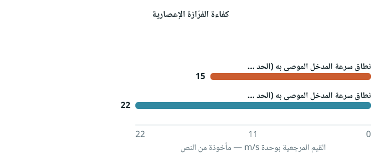

كفاءة الفرّازة الإعصارية
Cyclone Separator Efficiency
نسبة كتلة الجسيمات المحتجزة إلى كتلة الجسيمات الداخلة في فرّازة إعصارية، وتُوصف منحنى بكفاءة جزئية تتغير مع حجم الجسيم ويُحدد موضعها قطر القطع الذي تُحتجز عنده نصف الكتلة.
كفاءة الفرّازة الإعصارية هي نسبة ما تحتجزه الفرّازة من كتلة الجسيمات إلى ما يدخلها، وتُعبَّر عنها عادة بنسبة مئوية. لكن هذا الرقم الكلي وحده لا يصف الأداء، لأن الفرّازة لا تحتجز كل الأحجام بالقدر نفسه: الجسيمات الكبيرة تُقذف إلى الجدار بقوة طرد مركزي أكبر فتُحتجز بنسبة عالية، والجسيمات الدقيقة تبقى في التيار الغازي وتخرج معه. ولهذا تُوصف الفرّازة بمنحنى كفاءة جزئية يربط نسبة الاحتجاز بحجم الجسيم، ويُختصر هذا المنحنى في رقم واحد هو قطر القطع d50، أي الحجم الذي تُحتجز عنده نصف كتلة الجسيمات من ذلك الحجم. ويعمل الفصل بلا أجزاء متحركة ولا وسيط ترشيح: الغاز يدخل مماسياً فيتكوّن دوامة خارجية هابطة تدفع الجسيمات إلى الجدار، ودوامة داخلية صاعدة تخرج من الأنبوب المركزي. وتُستعمل الفرّازات كمرحلة أولى قبل المرشحات عالية الكفاءة، لأنها رخيصة وتتحمل الحرارة والغبار الكاشط. والخطأ الشائع أن تُقارن كفاءات فرّازات مختلفة بلا ذكر توزيع حجم الجسيمات الداخل، فالكفاءة الكلية تتغير بتغير هذا التوزيع لا بتغير التصميم وحده.
كيف تعمل الظاهرة؟
تعمل الفرّازة الإعصارية لأن الغاز الداخل مماسياً يكتسب حركة دورانية، فيتعرض كل جسيم لتسارع طرد مركزي يتناسب مع مربع سرعته المماسية ومقسوم على نصف قطر الدوران. وهذا التسارع أكبر من تسارع الجذب بأضعاف كثيرة، فيدفع الجسيمات الكبيرة نحو الجدار حيث تفقد زخمها وتنزلق إلى القمع، بينما يبقى الغاز في الدوامة الداخلية ويخرج من الأنبوب المركزي. والفصل يعتمد على الموازنة بين قوة الطرد المركزي التي تدفع الجسيم للخارج وقوة السحب التي يبذلها الغاز لحمله معه. وكلما كبر الجسيم زادت كتلته فزادت قوة الطرد المركزي النسبية، وكلما صغر اقتربت قوة السحب من إبقائه في التيار. ولهذا يوجد حجم يُتعادل عنده التأثيران، وهو ما يحدد موضع منحنى الكفاءة.
العلاقة بالأرقام
يُحسب قطر القطع من d50 = √[(9μW)/(2πN_e v_i(ρ_p − ρ_g))]، وفيه يظهر أن تقليل عرض المدخل أو زيادة السرعة أو عدد اللفات يصغّر d50 ويحسّن الفصل. وفي المثال المرجعي: W = 0.1875 m وv_i = 25.6 m/s وN_e = 5 تعطي d50 ≈ 4.26 µm، والكفاءة الجزئية عند 12 µm نحو 88.8%، وسقوط ضغط نحو 2.62 kPa بمعامل فقد رأس 8.0. ويُلاحظ من صيغة الكفاءة الجزئية أن الجسيمات التي تساوي ضعف قطر القطع تُحتجز بنسبة تتجاوز 80%، والتي تساوي أربعة أمثاله تتجاوز 94%، وهو ما يفسر لماذا تُستخدم الفرّازة كمرحلة تمهيدية لا نهائية.
مفاهيم متقاربة
الكفاءة الكلية رقم واحد يخفي منحنى كاملاً، ففرّازتان بالكفاءة الكلية نفسها قد تختلفان تماماً في احتجاز الأحجام الدقيقة إذا اختلف توزيع الداخل. ويُفصل قطر القطع عن الكفاءة الكلية لأنه يصف موضع المنحنى لا مساحته تحت التوزيع. وتُفصل كفاءة الفرّازة الغازية عن كفاءة المرشح الكيسي التي تعتمد على وسيط ترشيح وتصل إلى نسب أعلى عند الأحجام الدقيقة، وعن كفاءة الفرّازة الهيدروليكية التي تعمل بسائل وتُقاس بأحجام قطع أكبر بكثير. ويُفصل معامل فقد الرأس عن الكفاءة، فهو يقيس تكلفة الطاقة لا جودة الفصل، وقد تتحسن الكفاءة بزيادة السرعة بينما يرتفع سقوط الضغط بسرعة تربيعية.
حدود التطبيق
تفترض الصيغ الشائعة هندسة نسبية محددة وتدفقاً مضطرباً كاملاً وغازاً بلا رطوبة تكثف أو تكتل للجسيمات. وتفقد دقتها عند الأحجام الدقيقة جداً حيث يغلب الانتشار الاضطرابي على الطرد المركزي فتنخفض الكفاءة بدل أن ترتفع، وهي ظاهرة لا يلتقطها النموذج البسيط. وتتأثر بالتحميل الزائد: إذا تجاوزت كمية الغبار حاجة الفرّازة، خرج جزء من الجسيمات المحتجزة مع الغاز. كما أن التآكل عند السرعات العالية يغيّر هندسة المدخل تدريجياً فينحرف الأداء عن الحساب، والغازات عالية الحرارة تغيّر لزوجتها وكثافتها فتغيّر قطر القطع.

| الكمية | القيمة | المصدر |
|---|---|---|
| قطر القطع المحسوب لفرّازة قطرها 0.75 m بمعدل 1.8 m³/s | 4.26 µm | [2] |
| الكفاءة الجزئية عند حجم جسيم 12 µm في المثال نفسه | 88.8 % | [2] |
| عدد اللفات الفعالة النمطي لهندسة لابل القياسية | 5 لفة | [2] |
| نطاق سرعة المدخل الموصى به | 15–22 m/s | [2] |
المصادر
- 1 Processes Use Many Collector Types — C. E. Lapple — Chemical Engineering (McGraw-Hill) (1951). www.sciencedirect.com/science/article/pii/0004698173900061 · اطُّلع عليه 2026-11-28
- 2 Cyclone Separator Efficiency & Cut Size Calculator — Lapple model — DeepConverters (2026). www.deepconverters.com/page/cyclone-separator-efficiency-lapple-cut-size-calculator · اطُّلع عليه 2026-11-28
- 3 Air Pollution Control Engineering, 3rd ed. — Noel de Nevers — McGraw-Hill (2016). openlibrary.org/works/OL27678701W · اطُّلع عليه 2026-11-28
استشهد بهذا المصطلح
الصيغتان مبنيتان من بيانات الصفحة نفسها: العنوان والتاريخ ورابط النسخة المنشورة.
كفاءة الفرّازة الإعصارية — Cyclone Separator Efficiency. (2026). ديوان المعرفة — انفراد. https://infiradev.com/diwan/terms/term-cyclone-separator-efficiency.html
@misc{term-cyclone-separator-efficiency2026,
title = {كفاءة الفرّازة الإعصارية},
titleaddon = {Cyclone Separator Efficiency},
howpublished = {{ديوان المعرفة — انفراد} — مرجع علمي عربي},
year = {2026},
url = {https://infiradev.com/diwan/terms/term-cyclone-separator-efficiency.html},
urldate = {2026-11-28},
note = {مراجعة علمية: Abdullah Al-Huwaidi}
}
راجعه: Abdullah Al-Huwaidi · 2026-11-28 · آخر تحديث 2026-11-28